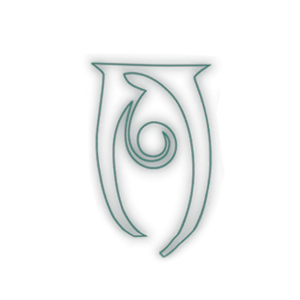
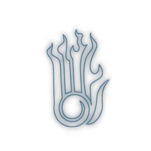
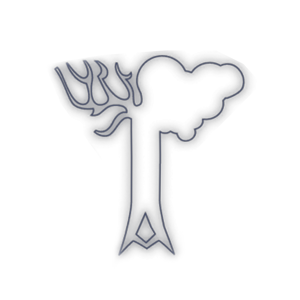
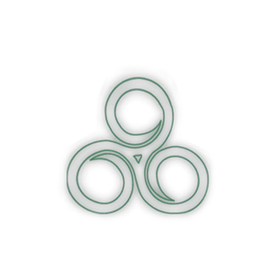

Em The Elder Scroll V: Skyrim, você tem o livre-arbítrio de escolher o caminho que quer seguir - que pode ser desde um ladrão até um guerreiro. Contudo, muitos optam pelo caminho dos Magos, visando destruir seus inimigos evocando poderosos feitiços.
Feitiços esses que são divididos em 5 diferentes categorias, que os classifica dependendo do efeito de cada um, podendo variar desde magias para se curar até feitiços que lhe permitem erguer os mortos para lutarem a seu favor.
Essas magias podem ser aprendidas com a leitura de tomos magicos que poderm ser obtidos tanto sendo encontrados pelo mapa como comprados em lojas expecializadas em magia. As 5 categorias são:
Magia de Conjuração
Magias de Conjuração são magias que convocam criaturas de Oblivion (Mundo Espiritual), a reanimação e controle dos mortos e a criação de armas etérias, criadas com a força da propia alma do usúario.

Magia de Destruição
Magias de Destruição são a principal força de combate dos magos. Elas são basicamente o controle de alguns elementos da natureza para o desferimento de ataques. Esses elementos são: Fogo, Relâmpago e Gelo.

Magia de Alteração
Magias de Alteração envolvem a manipulação do mundo físico e suas propriedades naturais. Esta habilidade te permite para lançar feitiços como respirar embaixo água, proteção mágica, e paralisia.

Magia de Ilusão
Magias de ilusão envolvem a manipulação da mente e dos sentidos do inimigo. Esta habilidade lhe permite lançar feitiços como o medo, charme e a capacidade de conceder invisibilidade ao usúario.

Magia de Restauração
Magias de Restauração são focadas na cura de ferimentos, de doenças e de envenenametos, alé da prevenção de danos e na fortificação de atributos do usúario.